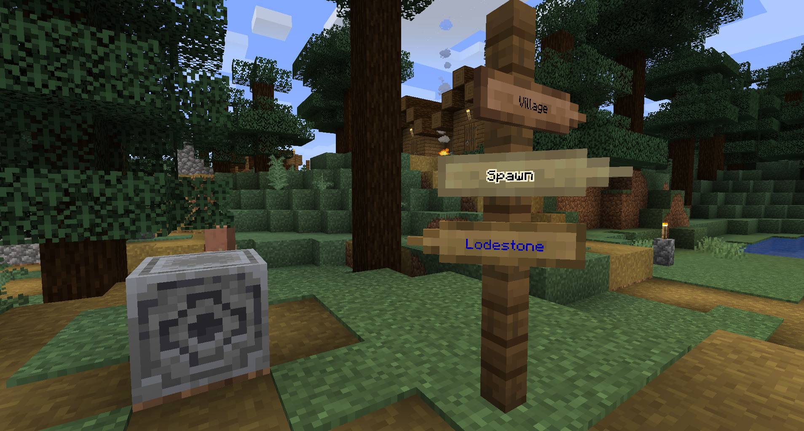

Sign Posts
Sign Posts are a neat way to indicate directions or paths.

Crafting
Available in the sawmill using any wooden plank.
Placement
A sign post can be placed by right-clicking any fence block with a sign post item. It will be placed perpendicular from the player's view angle, will point right, and whether it is put top or bottom depends on the crosshair target.
Usage
- Right-click empty-handed to edit the text.
- Right-click empty-handed while sneaking to invert the direction of one the targeted sign.
- Right-click with a compass to point to the world spawn.
- Right-click with a lodestone compass to point to a lodestone.
- Right-click with glow ink to make the text glow. Each sign can be made glowy separately.
- Right-click with dye to make the text colored. Each sign can have a separate color.
Technical Notes
- The sign texture is procedurally generated for every detected wood type to ensure mod compatibility.
The oak version of the sign is used as a template to generate every other variants.